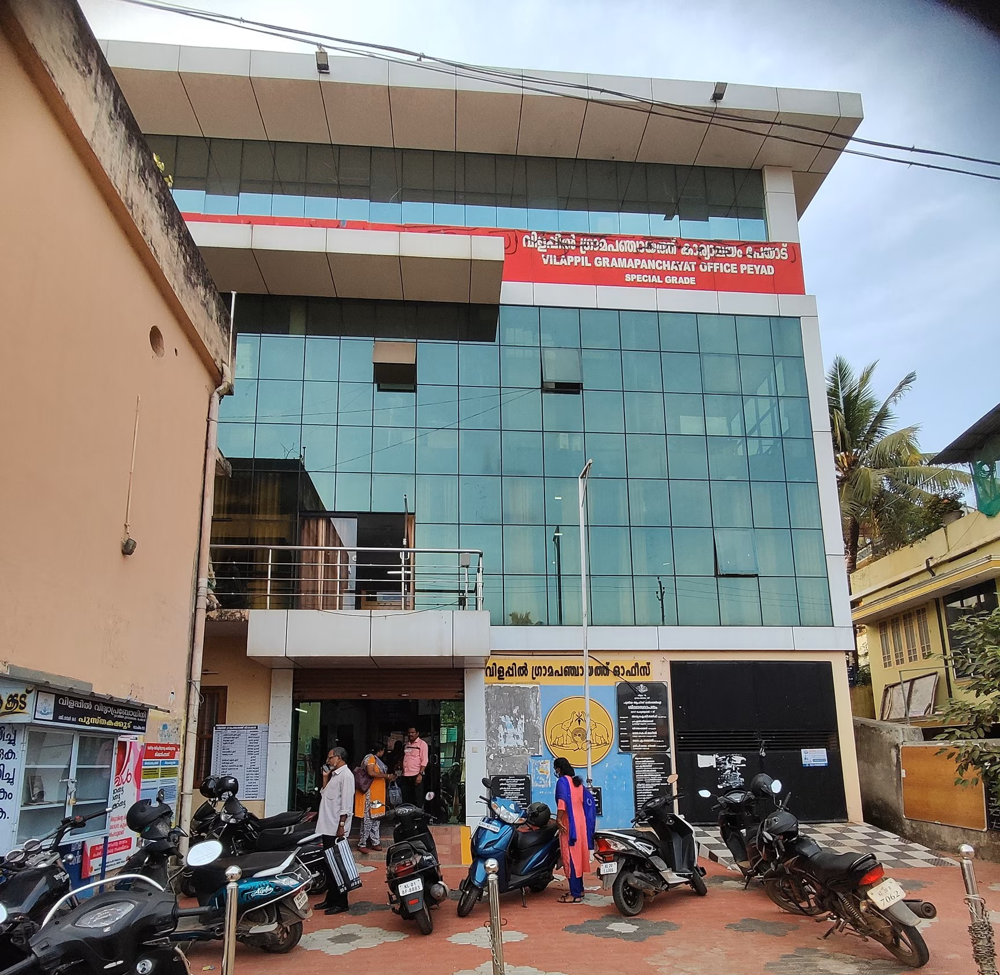
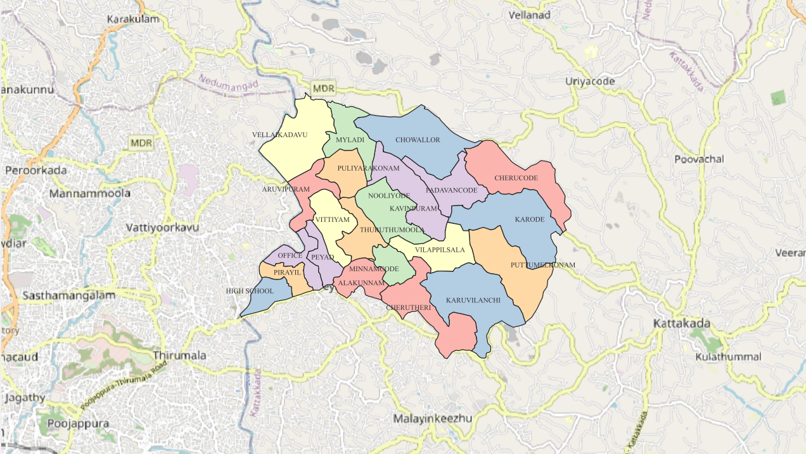

Administrative location
Vilappil is in Thiruvananthapuram district, within Kattakada Taluk and Nemom Block Panchayat, according to the Department of Panchayats’ published profile.
Kerala • Local self-government institution
Explore the administrative profile, geographical setting and local development context of Vilappil Grama Panchayat in Thiruvananthapuram district, Kerala.
A local-government area in the wider urban and rural landscape of southern Kerala.
Vilappil Grama Panchayat is a rural local self-government institution in Thiruvananthapuram district, Kerala. The Department of Panchayats lists it under Nemom Block Panchayat and Kattakada Taluk. The revenue village associated with the Panchayat is Vilappil.
The Panchayat works within Kerala’s decentralised local-government system. Grama Panchayats support local development planning and deliver services within their legally assigned responsibilities, with community participation through institutions such as the Gram Sabha.
This website presents a concise geographical overview rather than a substitute for official government services. For current notices, elected representatives, service applications and official records, use the Panchayat’s official website linked below.

Published basic details from the Kerala Department of Panchayats.
Data note: These figures are reproduced from the Department of Panchayats’ published district-level basic-details table. The population is a 2011 Census-era figure, not a current population estimate. Verify the latest profile with the official department before using the figures for planning or formal reporting.
How location, settlement and environmental management shape local planning.
Vilappil is in Thiruvananthapuram district, within Kattakada Taluk and Nemom Block Panchayat, according to the Department of Panchayats’ published profile.
Its position within the wider Thiruvananthapuram region makes settlement growth, road connectivity and access to public facilities relevant subjects for local geographical study. Site-specific claims should be checked against current maps and field information.
The Panchayat forms part of Kerala’s three-tier rural local-government structure. Local planning and public participation are important to the delivery of services and the identification of community priorities.
The Vilappilsala waste-treatment controversy has been associated with debates on waste disposal, environmental impacts, public participation and the distribution of environmental burdens. It remains a useful case for studying environmental governance; avoid assuming current facility status without checking recent official information.
Use the map to understand the Panchayat’s location and administrative context.
The map provided here is a visual reference for the location of Vilappil Grama Panchayat. Check the map legend, scale, north arrow and data source on the map itself when interpreting boundaries or distances.
